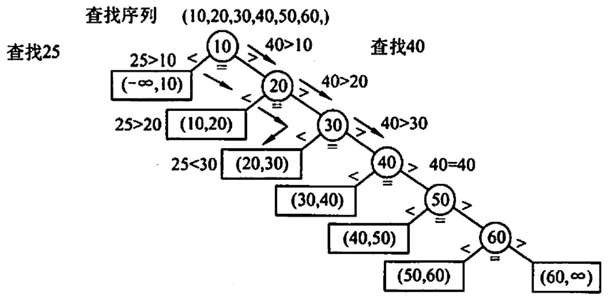
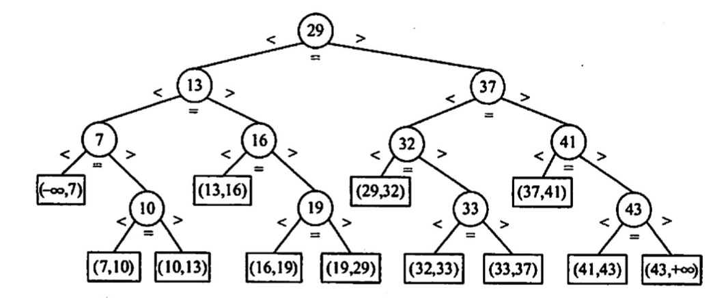
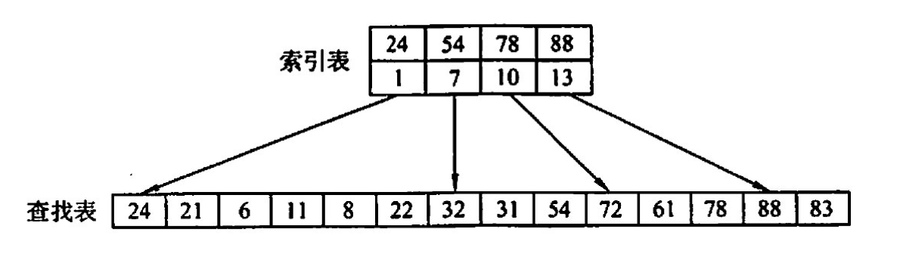
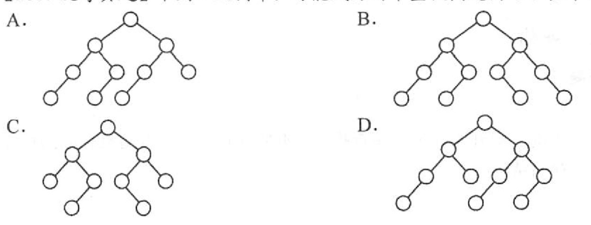

2022.09.17

又叫二分查找，仅用于有序存放的顺序表
思路：low，mid，high分别指向最低，中间，最高。根据mid结点与查找结点的大小关系，判断下一次low，mid，high位置。
折半查找的过程——判定树——平衡二叉树

$ASL_{成功}=\frac{1}{n}\sum_{i=1}^n(1\times1+2\times2+\cdots+2^h\times h)=\frac{n+1}{n}log_2 (n+1)-1$
$h = \lceil \log_2(n+1) \rceil$
思路：块间有序，块内无序。块间采用顺序查找或折半查找找到某一个块，然后对着一个块用顺序查找。

设索引表和查找表长度为 $L_l$ 和 $L_s$ ：
块间顺序查找：$ASL = \frac{b+1}{2}+\frac{s+1}{2}$，b个块，块内s个元素
块间折半查找：$ASL = \lceil \log_2(b+1) \rceil+\frac{s+1}{2}$
【答案】：A
【答案】：B
【答案】：B
【答案】：A
【答案】：A -> D
【答案】：C
【答案】：B
【答案】：A -> B，因为二叉排序树性能和输入时间有关
【答案】：B
已知有序表(13,18,24, 35,47,50，62，83,90，115，134)，当二分查找值为90的元素时，查找成功的比较次数为（）. A 1 B2 C4 D6
【答案】：B
| 1 | 2 | 3 | 4 | 5 | 6 | 7 | 8 | 9 | 10 | 11 |
|---|---|---|---|---|---|---|---|---|---|---|
| 13 | 18 | 24 | 35 | 47 | 50 | 62 | 83 | 90 | 115 | 134 |
(1+11)/2=6
(7+11)/2=9
对表长为n的有序表进行折半查找，其判定树的高度为（ ）。 A. 上取整{1og2(n+1)} B. 下取整{1og2(n+1)}-1 C. 上取整{1og2(n)} D. 下取整{1og2(n+1)}-1
【答案】：A
已知一个长度为 16的顺序表，其元素按关键宇有序排列，若来用折半查找算法查找一个不存在的元素，则比较的次数至少是（)，至多是( )。 A. 4 B. 5 C. 6 D. 7
【答案】：AB
具有12个关键字的有序表中，对每个关键字的查找概率相同，折半查找算法查找成功的平均查找长度为（ ），折半查找查找失败的平均查找长度为（ ）。 A. 37/12 B. 35/12 C. 39/13 D. 49/13
【答案】：AD
来用分块查找时，数据的组织方式为（ ） A数据分成若干块，每块内数据有序 B. 数据分成若干块，每块内数据不必有序，但块间必须有序，每块内最大（或最小）的数据组成索引块 C.数据分成若干块，每块内数据有序，每块内最大（或最小）的数据组成索引块 D.数据分成若干块，每块(除最后一块外）中数据个数需相同
【答案】：B
对有2500个记录的索引顺序表（分块表）进行查找，最理想的块长为（）. A. 50 B. 125 C. 500 D.上取整{log2 2500}
【答案】：D -> A
设顺序存储的菜线性表共有123 个元素，按分块查找的要求等分为了快。若对索引表采用顺序查找法来确定子块，且在确定的子块中也采用顺序查找法，则在等概率情况下，分块查找成功的平均查找长度为（ ）. A. 21 B. 23 C. 41 D. 62
【答案】：B
为提高查找效率，对有65025 个元素的有序顺序表建立索引顺序结构，在最好情况下查找到表中已有元素最多需要执行（）次关键字比较。 A. 10 B. 14 C. 16 D. 21
【答案】：$\sqrt{65025}=255$，上取整{log_2 255+1}=16
【2010 统考真题】已知一个长度为16的顺序表工，其元泰按关键字有序排列，若采用折半查找法查找一个工中不存在的元素，则关键字的比较次数最多是(） A.4 B. 5 C. 6 D. 7
【答案】：B
【2015 统考真题】下列选项中，不能构成折半查找中关键字比较序列的是（）. A. 500, 200, 450, 180 B. 500, 450, 200, 180 C. 180, 500, 200, 450 D. 180, 200, 500, 450
【答案】：A
【2016 统考真题】在有n (n>1000）个元素的升序数组A中查找关键字x。查找算法的伪代码如下所示
k=0;
while(k<n && A[k]<x) k += 3;
if(k<n && A[k]==x) 查找成功;
else if(k-1<n && A[k-1]==x) 查找成功;
else 查找失败;
本算法与折半查找算法相比，有可能具有更少比较次数的情形是（）
A. 当x不在数组中
B.当×接近数组开头处
C.当×接近数组结尾处
D.当x位于数组中间位置
【答案】：B
【2017 统考真题】下列二叉树中，可能成为折半查找判定树（不含外部结点）的是（）。

【答案】：A
【2013 统考真题】设包含4 个数据元素的集合S= {'do','for,'repeat', 'while'}，各元素的查找概率依次为p1=0.35, p2=0.15, p3=0.15, p4=0.35. 将 S保存在一个长度为4的顺序表中，来用折半查找法，查找成功时的平均查找长度为 2.2。 1）若来用顺序存储结构保存S，且要求乎均查找长度更短，则元素应如何排列？应使用何种查找方法？查找成功时的平均查找长度是多少？ 2）若来用链式存储结构保存S，且要求平均查找长度更短，则元素应如何排列？应使用何种查找方法？查找成功时的平均查找长度是多少？
【答案】：
{'do','for,'repeat', 'while'}->{'d','f','r','w'}
0.15+0.7+0.3+1.05 = 2.2
新的折半查找：【这个是我原创的，答案方法是顺序查找】
{'while','do','for,'repeat'}，设每个字符串的第一个字符为c，通过对比(int)c%(int)'w'，来进行折半查找。
0.35+0.7+0.3+0.45=1.8